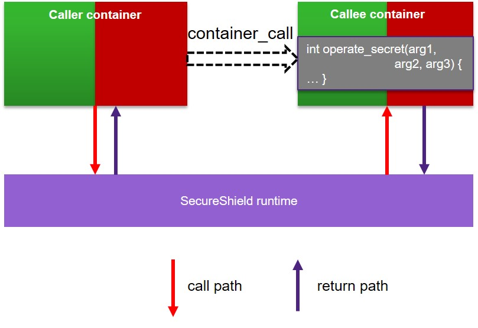

SecureShield¶
SecureShield enables the execution of applications in isolated, Trusted Execution Environments (TEE). Multiple, isolated environments can run on a single core. The SecureShield runtime is a microvisor implementation that provides the required isolation, enforced by processor privilege levels and the memory-protection unit (MPU). Depending on the level of trust for the application, each execution environment can be given or denied access to system resources like memory, memory-mapped I/O, CPU control registers, and APEX extension instructions and registers.

Terminology¶
SecureShield Runtime¶
SecureShield runtime is a microvisor implementation for ARC EM Processors with MPU to manage containers, analogous to an RTOS kernel managing tasks.
Container¶
A container defines a sandbox for an application. The container provides the trusted execution environment the application code runs in. Containers are designed to be isolated from each other. Each container has its own space attributes, including the stack area (required), context area (optional), resources (peripherals, interrupt, auxiliary registers). A container context is the memory area (ROM or RAM) that is used for the container itself; it is defined in the container configuration.

Secure Containers¶
Secure containers have a secure privilege level, meaning that secure containers are trusted and can access all the resources in the system. Bugs or malware in a secure container can compromise the system so a container that is configured as secure can not be changed at runtime.
Normal Containers¶
Normal containers have a normal privilege level, meaning that their access to system resources is limited. Normal containers are only allowed to access the resources allocated to them. If they attempt to access other resources, a violation exception is raised.
Background Container¶
The background container is a special normal container whose resources are shared to all the other containers. It has no context area, and its stack is the original application stack when SecureShield is not enabled.
Resources¶
The core concept in SecureShield is that a container can only access resources that have been explicitly allocated to it.
Memory Mapped Resources¶
The memory mapped resources are resources that are mapped into memory address space, e.g. ram, rom, peripherals (UART/I2C/SPI). Memory mapped resources are isolated and protected by the MPU.
System Resources¶
System resources are resources that are not isolated and protected by MPU, e.g., interrupts, exceptions, registers, APEX. System resources are isolated and protected by the processor privilege level. Secure system resources require secure privilege level and can be allocated to normal containers; normal system resources require normal privilege level and are shared to all containers.
System resources APIs are used by normal containers to access secure system resources. Because secure containers have secure privilege level, then can access secure system resources directly.
Container Interfaces¶
A container can provide services to other containers through an interface. An interface is a C function with parameters and return value registered in an access control table.
As shown below, a container can call the interface of another container through container call. The container interface will be executed in the context of callee container.
Background container has no interfaces as it is a global shared container, i.e., regular C function calls can be performed.
Resources of a container¶
A container has implicit resources: code sections (.text, .rodata, .bss, .data) and stack; as well as explicit resources defined in an access control table, e.g., memory mapped resources, system resources and container interfaces.
Access Control Table¶
The privileges that a container has to access the system are defined via Access Control (AC).
Each container has a table that defines the allocated resources and privilege level, including memory, interrupts, and peripherals. This table is referred to as the access-control table or access-control list.
Each item in this table or list is called an access-control item. An access control item has the type access control, and additional attributes that constitute a triplet: {attribute1, attribute2, type|access}.
typedef struct
{
void* param1; /* address parameter or function pointer */
uint32_t param2; /* size or no. */
CONTAINER_AC ac; /* resource type, access control types */
} EMBARC_PACKED CONTAINER_AC_ITEM;
An access-control table example is shown below:
static CONTAINER_AC_TABLE g_container_act[] = {
/* memory mapper peripheral, {start_address, size in bytes, type | access} */
{(void *)(PERIPHERAL_ADDR_BASE + REL_REGBASE_PINMUX), 0x1000, SECURESHIELD_ACDEF_UPERIPH},
/* memory, {start_address, size in bytes, type | access} */
{(void *)0x10000, 0x1000, SECURESHIELD_ACDEF_URAM},
/* system resources-interrupt, {interrupt handler, interrupt no, type} */
{default_interrupt_handler, INTNO_GPIO, SECURESHIELD_AC_IRQ},
/* system resources-auxiliary registers, {start_address, size, type}*/
{(void *)0x21, 0x3, SECURESHIELD_AC_AUX},
/* container interface, {interface handler, number of interface handler arguments, type} */
{tst_func4, 4, SECURESHIELD_AC_INTERFACE},
};
According to this access control table, the container is allocated the peripheral area of PIN_MUX, a 0x1000 bytes ram region starting from 0x10000, a GPIO interrupt (INTNO_GPIO), an auxiliary-register area starting from 0x21 with a size of 0x3. The container also has an interface (tst_func4) to provide the service with 4 arguments in the interface handler function
The resource type describes the kind of resource, such as interrupt, register, or memory. The access-control attribute describes how it is accessed: secure or normal, read/write/execute. The detailed definitions of resource type and access-control attribute is listed as follow.
Basic Resource Type |
Parameters |
Comments |
|---|---|---|
SECURESHIELD_AC_MEMORY |
(start_address, size) |
Allocate a memory region |
SECURESHIELD_AC_PERIPHERAL |
(start_address, size) |
Allocate a memory-mapped peripheral are |
SECURESHIELD_AC_IRQ |
(interrupt_handler, interrupt no |
Allocate an interrupt |
SECURESHIELD_AC_AUX |
(aux start address, size) |
Allocate an auxiliary address space |
Resource Access Attribute |
Comments |
|---|---|
SECURESHIELD_AC_UEXECUTE |
Execution with user privilege |
SECURESHIELD_AC_UWRITE |
Write with user privilege |
SECURESHIELD_AC_UREAD |
Read with user privilege |
SECURESHIELD_AC_KEXECUTE |
Execution with kernel privilege |
SECURESHIELD_AC_KWRITE |
Write with kernel privilege |
SECURESHIELD_AC_KREAD |
Read with kernel privilege |
SECURESHIELD_AC_SIZE_ROUND_UP |
The resource size should be rounded up |
SECURESHIELD_AC_SIZE_ROUND_DOWN |
the resource size should be rounded down |
SECURESHIELD_AC_SHARED |
the resource is a shared resource (no implementation now) |
SECURESHIELD_AC_SECURE |
the resource is a secure resource |
SECURESHIELD_AC_NORMAL |
the resource is a normal resource |
More details can be found in secureshield_vmpu_exports.h. For some resources, there are pre-defined CONTAINER_AC, e.g., SECURESHIELD_ACDEF_U/KROM, SECURESHIELD_ACDEF_U/KRAM.
Secure Call¶
In SecureShield, a secure call is implemented as a section of assembly code and invoked as a normal function call. The secure call is the only communication interface for a container to call the SecureShield runtime services. The following SecureShield runtime services are provided:
container call: call the services provided by other containers
interrupt management: see
secureshield_int_exports.hauxiliary-register access and benchmark function: see
secureshield_sys_ops_exports.h
#define SECURESHIELD_SECURE_CALL(id, metadata, ...) \
({ \
SECURESHIELD_MACRO_REGS_ARGS(uint32_t, ##__VA_ARGS__) \
SECURESHIELD_MACRO_REGS_RETVAL(uint32_t, res) \
Asm( \
"SECURE_INSTN %[secure_call_id]\n" \
metadata \
: SECURESHIELD_MACRO_ASM_OUTPUT(res) \
: SECURESHIELD_MACRO_ASM_INPUT(__VA_ARGS__), \
[secure_call_id] "i" (id) \
); \
res; \
})
If SECURESHIELD_VERSION == 1, SECURE_INSTN is trap_s; If SECURESHIELD_VERSION == 2, SECURE_INSTN is sjli.
Container Call¶
Although containers are isolated from each other, a container can provide services to other containers through container interface. The container interface must first be registered in the access control table. The background container has no interface as its resources are shared to all other containers.
To call a container interface, container call is required. The following is an example.
int tst_func2(int arg1, int arg2)
{
return arg1+arg2;
}
static const CONTAINER_AC_ITEM g_container1_act[] = {
{tst_func, 2, SECURESHIELD_AC_INTERFACE}
};
In the above code, container1 has one interface named tst_func2 with two arguments to provide services. If other containers want to call this service, the following container call should be made:
ret = container_call(container1, tst_func2, 1, 2);

The container_call will be expanded into the following assembly.
mov r0, 1
mov r1, 2
SECURE_INSTN SECURESHIELD_SECURE_CALL_CONTAINER_IN
b skip_args1
.long SECURESHIELD_CONTAINER_CALL_MAGIC
.long tst_func2
.long container1_cfg_prt
Note
Container calls can be nested, i.e., in a container interface, another container call can be made. But the target container should not be the caller container, i.e., a loop of container call is not allowed !
Also, container call is not allowed to be made in the interrupt and exception handler
Because SecureShield runtime is not integrated with OS, in the container call which will cause container switch, task scheduler should be disabled to avoid task switch.
Memory Map¶
The memory map of a SecureShield application is shown as follow. There are two worlds, secure world and normal world. The normal world, consisting of normal containers, is in normal memory (normal rom and ram). The secure world, consisting of secure containers, is in secure memory (secure rom and ram). In each world, containers are isolated with each other through MPU, an address alignment is also required. Besides secure containers, SecureShield runtime, can be regarded as a special secure container, is in secure memory with a fixed position. SecureShield runtime will be compiled and linked independently with the application, so it’s a black box to application.

Compile and Link Flow¶
Different with common one shot compile and link, there are two compiles and links in SecureShield application, one for SecureShield runtime, one for application.


Steps to Create a SecureShield Application¶
makefiles
LIB_SEL += secureshield, select SecureShield library
-DLIB_SECURESHIELD_OVERRIDES, this definition will enable override mechanism which will override the ARC HAL API in arc_exception.h, arc_builtin.h and arc_exception.h with the SecureShield API
APPL_SECURE_CSRC_DIR (optional), the directories of C source files which need to be compiled and linked with SecureShield runtime
SECURE_SYMBOL_LIST (optional), the file of symbols need to be exported to normal application from secure binary
Container Configuration File (secureshield_appl_config.json)
secureshield_appl_config.json includes the application information to generate the correct containers and memory map
board: the board to build and run secureshield application on
secureshield_version : the secureshield version
address_alignment : the data structure of secureshield application need to be aligned on
predefine : define PERIPHERAL_ADDR_BASE required by PINMUX, UART1 and GPIO0
containers : define containers set-up and main application
memory : memory map of a secureShield application
shared_memory : resources are shared in memory map
"board" : "emsk",
"secureshield_version" : 2,
"address_alignment": 2048,
"predefine" : [
{ "define_name" : "PERIPHERAL_ADDR_BASE",
"define_value" : "0xf0000000"
}
],
"containers" : [
{"container_name" : "background_container",
"is_background_container" : true,
"is_secure" : false,
"ac_list" : [
{ "para1" : "PERIPHERAL_ADDR_BASE + REL_REGBASE_PINMUX",
"para2" : "0x1000",
"ac" : "SECURESHIELD_ACDEF_UPERIPH"
},
{ "para1" : "PERIPHERAL_ADDR_BASE + REL_REGBASE_UART1",
"para2" : "0x1000",
"ac" : "SECURESHIELD_ACDEF_UPERIPH"
},
{ "para1" : "PERIPHERAL_ADDR_BASE + REL_REGBASE_GPIO0",
"para2" : "0x1000",
"ac" : "SECURESHIELD_ACDEF_UPERIPH"
},
{ "para1" : "default_interrupt_handler",
"para2" : "INTNO_GPIO",
"ac" : "SECURESHIELD_AC_IRQ"
},
{ "para1" : "default_interrupt_handler",
"para2" : "INTNO_UART1",
"ac" : "SECURESHIELD_AC_IRQ"
},
{ "para1" : "default_interrupt_handler",
"para2" : "INTNO_TIMER0",
"ac" : "SECURESHIELD_AC_IRQ"
}
]
},
{"container_name" : "container1",
"is_background_container" : false,
"is_secure" : false,
"ac_list" : [
{ "para1" : "init_secret",
"para2" : "0",
"ac" : "SECURESHIELD_AC_INTERFACE"
},
{ "para1" : "operate_secret",
"para2" : "3",
"ac" : "SECURESHIELD_AC_INTERFACE"
},
{ "para1" : "container12_shared",
"para2" : "SECRET_LEN",
"ac" : "shared_memory"
}
],
"stack_size" : "1024"
},
{"container_name" : "container2",
"is_background_container" : false,
"is_secure" : false,
"ac_list" : [
{ "para1" : "trusted_ops",
"para2" : "0",
"ac" : "SECURESHIELD_AC_INTERFACE"
},
{ "para1" : "container12_shared",
"para2" : "SECRET_LEN",
"ac" : "shared_memory"
}
],
"stack_size" : "1024"
}
],
"memory" : [
{ "region_name" : "NORMAL_ROM_START",
"region_size" : "0x11000000"
},
{ "region_name" : "NORMAL_ROM_SIZE",
"region_size" : "0x00200000"
},
{ "region_name" : "NORMAL_RAM_START",
"region_size" : "0x11400000"
},
{ "region_name" : "NORMAL_RAM_SIZE",
"region_size" : "0x00100000"
},
{ "region_name" : "SECURE_ROM_START",
"region_size" : "0x11200000"
},
{ "region_name" : "SECURE_ROM_SIZE",
"region_size" : "0x00200000"
},
{ "region_name" : "SECURE_RAM_START",
"region_size" : "0x11500000"
},
{ "region_name" : "SECURE_RAM_SIZE",
"region_size" : "0x00100000"
}
],
"shared_memory" : [
{ "region_name" : "container12_shared",
"is_secure" : false,
"is_rom" : false}
]
The above configuration will generate the following generate the following sections in final linker script
.container1.ram.data ALIGN(32) : {
_f_data_container1 = .;
*(.container1.data .container1.data.*)
_e_data_container1 = .;
} > NORMAL_RAM AT > NORMAL_ROM
.container1.ram.bss : {
_f_bss_container1 = .;
*(.container1.bss .container1.bss.*)
_e_bss_container1 = ALIGN(32);
} > NORMAL_RAM
_f_data_load_container1 = LOADADDR(.container1.ram.data);
.container2.ram.data ALIGN(32) : {
_f_data_container2 = .;
*(.container2.data .container2.data.*)
_e_data_container2 = .;
} > NORMAL_RAM AT > NORMAL_ROM
.container2.ram.bss : {
_f_bss_container2 = .;
*(.container2.bss .container2.bss.*)
_e_bss_container2 = ALIGN(32);
} > NORMAL_RAM
_f_data_load_container2 = LOADADDR(.container2.ram.data);
.container12_shared.ram.data ALIGN(32) : {
_f_data_container12_shared = .;
*(.container12_shared.data .container12_shared.data.*)
_e_data_container12_shared = .;
} > NORMAL_RAM AT > NORMAL_ROM
.container12_shared.ram.bss : {
_f_bss_container12_shared = .;
*(.container12_shared.bss .container12_shared.bss.*)
_e_bss_container12_shared = ALIGN(32);
} > NORMAL_RAM
_f_data_load_container12_shared = LOADADDR(.container12_shared.ram.data);
Coding
A recommended SecureShield application is :
one configuration file secureshield_appl_config.json, with which to generate include file and link script by embARC CLI
one container, one source file or directory, e.g container1 in container1.c
files compiled with SecureShield runtime are in specific directory, e.g. secure
Define the exported secure symbols
secure_symbol.txt contains the symbols (container interface) exported to normal application from secure binary. This file is only required when normal application needs to call the symbol in secure binary. It also needs to be defined in makefile. For example, the following container (container4) will be compiled and linked with secure binary, it has two interfaces:
static CONTAINER_AC_TABLE g_container4_act[] = {
{tst_func_sec1, 0, SECURESHIELD_AC_INTERFACE},
{tst_func_sec2, 0, SECURESHIELD_AC_INTERFACE}
};
Then the secure_symbol.txt should be:
tst_func_sec1
tst_func_sec2
Compile and Debug
Upon compiling and linking, the following files will be generated:
linker_xx.ldf: the generated linker script for normal application
secure_linker_xx.ldf: the generated linker script for secure binary
secureshield_secure.bin/elf: secure binary
secureshield_secure.syms: the exported secure symbol list
<app_name>_xx_xx.bin/elf: normal application binary
SecureShield Application Examples¶
example_secureshield_secret_normal
example_secureshield_secret_secure
example_secureshield_secret_secure_sid
example_secureshield_test_case